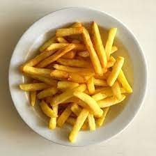

Patatas fritas
Receta de patatas fritas caseras

Ingredientes
2 a 4 patas (200g)
4 dientes de ajo
Aceite de oliva
sal
Elaboracion (Pasos)
Calentar aceite en una sarten
Añadir las patatas cortada, la sal y los ajos
Freir al gusto
Serivir al plato
Regresar